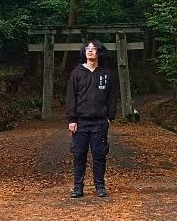

Je m'appelle Dina, j'ai 25 ans et je souhaiterais devenir développeur web Fullstack.
J'ai suivi pendant 4 ans une licence de japonais pour laquelle je n'ai au final obtenu que la deuxième année.
Depuis, je travaille dans un restaurant japonais mais je souhaiterais me reconvertir professionnellement.
J'ai pu actuellement apprendre à coder en Python, JavaScript et HTML/CSS en autodidacte.
Je suis admis à La Capsule à partir du 24 mars pour deux mois de formation intensive.
Avant, pendant et après cette formation, je compte me servir de ce site portfolio afin de
mettre en avant et répertorier mes différents projets ainsi que des informations générales
à mon propos.